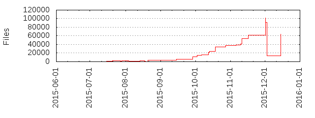

Files
- Total files
- 63966
- Total lines
- 147687
- Average file size
- 14276.31 bytes

| Extension | Files (%) | Lines (%) | Lines/file |
|---|
| 4 (0.01%) | 1479 (1.00%) | 369 |
| atlas | 4 (0.01%) | 37547 (25.42%) | 9386 |
| bat | 1 (0.00%) | 90 (0.06%) | 90 |
| cmd | 1 (0.00%) | 1 (0.00%) | 1 |
| css | 1 (0.00%) | 43 (0.03%) | 43 |
| fnt | 4 (0.01%) | 401 (0.27%) | 100 |
| gradle | 6 (0.01%) | 337 (0.23%) | 56 |
| html | 1 (0.00%) | 32 (0.02%) | 32 |
| info | 3 (0.00%) | 0 (0.00%) | 0 |
| jar | 25 (0.04%) | 59448 (40.25%) | 2377 |
| java | 43 (0.07%) | 6588 (4.46%) | 153 |
| js | 2 (0.00%) | 109 (0.07%) | 54 |
| json | 1 (0.00%) | 64 (0.04%) | 64 |
| meta | 37046 (57.92%) | 0 (0.00%) | 0 |
| mp3 | 10608 (16.58%) | 2311770 (1565.32%) | 217 |
| png | 5571 (8.71%) | 47176 (31.94%) | 8 |
| properties | 4 (0.01%) | 36 (0.02%) | 9 |
| state | 1 (0.00%) | 21 (0.01%) | 21 |
| svg | 10628 (16.62%) | 63748 (43.16%) | 5 |
| txt | 2 (0.00%) | 42 (0.03%) | 21 |
| uploaded | 3 (0.00%) | 0 (0.00%) | 0 |
| xml | 7 (0.01%) | 75 (0.05%) | 10 |